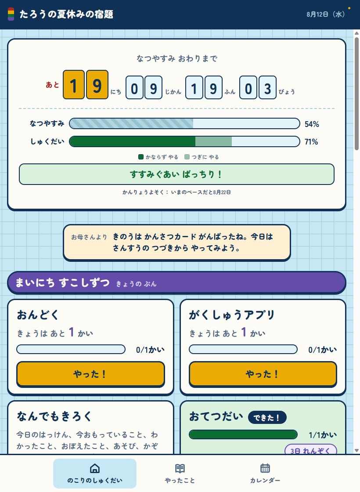
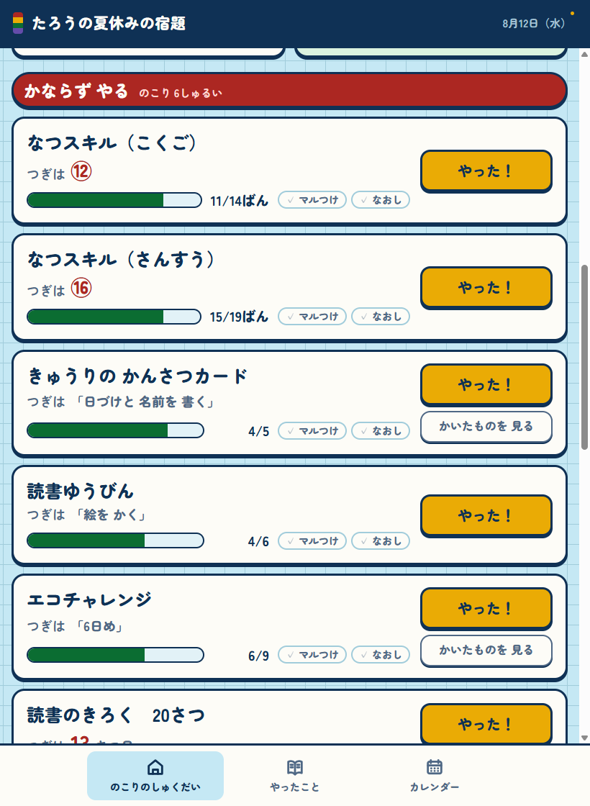
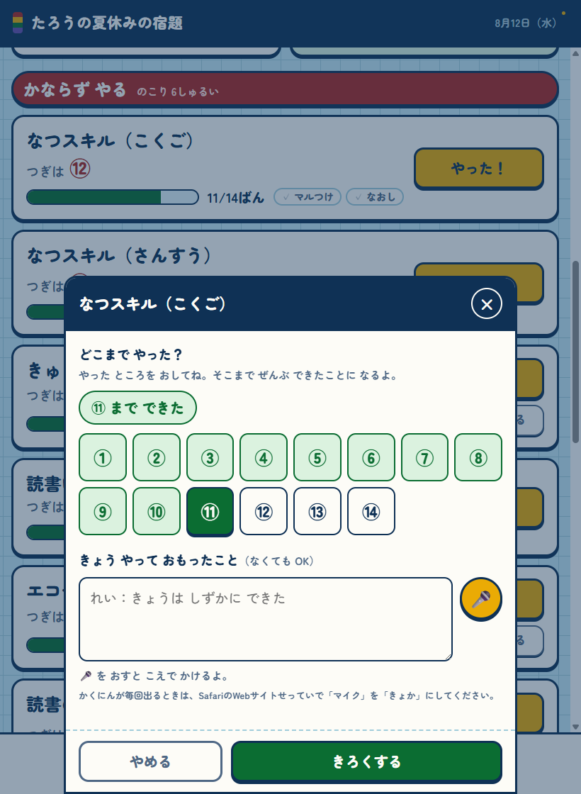
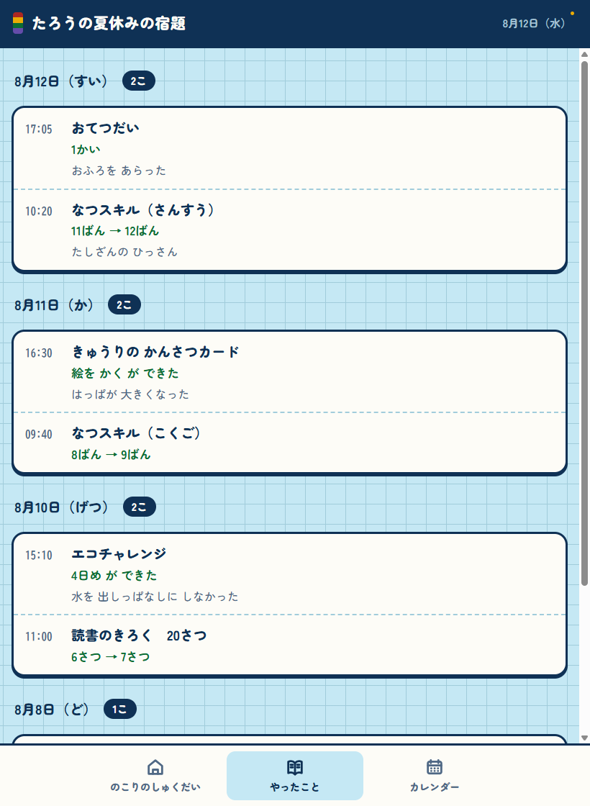
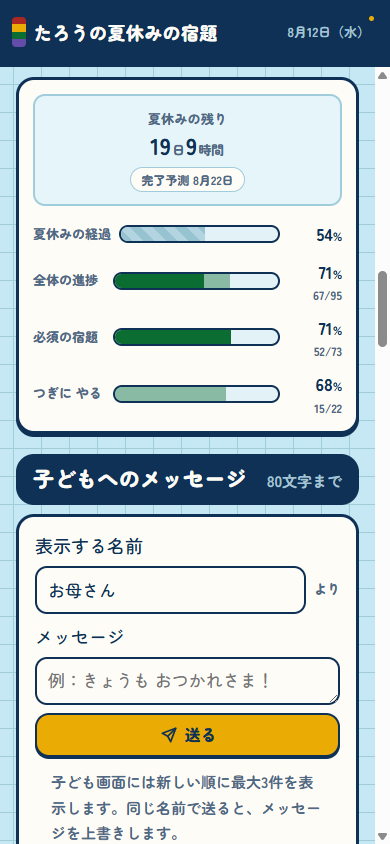
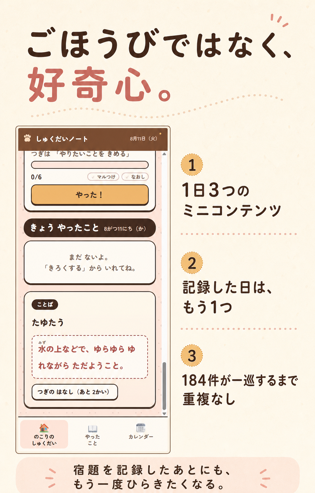

こんにちは。
宿題の残りを、子どもが自分で確かめられる。
夏休みの宿題を記録する無料のWebアプリです。次にやることと、どこまで終わったかを、子どもの画面にわかりやすく出します。
家で使うために、個人で作ったアプリです。同じように夏休みの宿題を見守るご家庭にも、役立つところがあればどうぞ。

アプリの取得も、アカウントの登録も要りません。
「あとどのくらい？」を、毎日見られるように。
保護者が管理表を見せるのではなく、子ども本人が読める画面にしました。入力も、ほとんどがタップだけです。
-
1
残りが見える
夏休みの日数と宿題の進み具合を、2本のバーで並べます。
-
2
次がわかる
「つぎは⑦」「つぎは絵をかく」のように、次にすることを1つだけ出します。
-
3
タップで残せる
やった番号や段階を選ぶだけ。文字を書かなくても記録できます。
-
4
保護者も見られる
必要なら家族の端末をつなぎ、進み具合と記録を共有できます。
毎日することは、これだけです。
宿題を始める前にカードを見て、終わったら「やった！」を押します。専用の記録画面を探す必要はありません。
-
1 / 見る
次にするところを確かめる
ドリルの番号、観察カードの段階、毎日のノルマ。それぞれの宿題に合う形で、次にすることが表示されます。

カードには、今の進み具合と次にするところが並びます。 -
2 / 押す
終わったところを選ぶ
「やった！」を押し、今日できたところを選びます。メモは書いても、書かなくてもかまいません。

番号を押すだけで記録できます。あとから戻して直すこともできます。 -
3 / 振り返る
やったことが日付ごとに残る
いつ、何を、どこまで進めたかが残ります。カレンダーから、その日の記録を見返すこともできます。

「やったこと」には、毎日の積み重ねがそのまま並びます。
2本のバーなら、間に合いそうか伝わります。
上が夏休みの過ぎたぶん、下が宿題の終わったぶんです。下のバーが先に進んでいれば、今のところ順調です。
記録が十分にたまるまでは、完了予測日を出しません。少ない記録から当てずっぽうの日付を見せないためです。
保護者は、進み具合を見て、ひとこと送れます。
全体の残り、宿題ごとの進み具合、終わりそうな日、その日の記録をまとめて見られます。
子どもの画面には、80文字までの短いメッセージを送れます。承認やポイントの仕組みはありません。

記録したあとに、もう一度ひらきたくなるものも。
毎日、小さなことばやなぞなぞなどが3つ出ます。宿題を記録した日は、もう1つ増えます。まだ見ていない内容から出るので、次に何が出るかは開いてからのお楽しみです。
宿題だけで終わる画面にせず、その日に少し気になったことも持ち帰れるようにしました。
画面の色や雰囲気は、設定から選べます。写真は、ねこのデザインを選んで使ったときの例です。

使う前に、知っておいてほしいこと。
学校や企業が提供するサービスではありません。できることと、守ってほしいことを、先にまとめます。
- 無料・広告なし課金はありません。広告も表示しません。
- 学校とは無関係学校や教育委員会の公式アプリではありません。学校名や先生の名前は入れないでください。
- 1台なら端末内だけ家族でつながなければ、記録はその端末の中だけに保存されます。
- 共有は合言葉で家族でつなぐ場合、合言葉を知っている人が記録を見られます。招待リンクをSNSへ貼らないでください。
- 書き出して保管設定から記録をファイルへ書き出せます。端末を替える前や学期の切れ目に保存しておくと安心です。
よくある質問
細かな設定やデータの扱いは、画面写真つきの使い方にまとめています。
何年生向けですか。
小学校の低学年を考えて作りました。表示する漢字の設定を変えれば、高学年でも使えます。
夏休み以外にも使えますか。
使えます。期間は設定で変えられるので、冬休みや、週ごとの宿題にも使えます。
子ども用の端末がなくても使えますか。
保護者の端末1台だけでも使えます。その場合は家族でつなぐ設定をせず、そのまま始めてください。
間違えて記録したら直せますか。
同じカードから入れ直せます。番号を戻すことも、記録を1件ずつ消すこともできます。
しばらく使わないと消えますか。
家族でつないだデータは、どの端末からも90日間まったく更新がないと削除の対象になります。端末の中だけのデータは対象外です。
合うご家庭があれば、気軽に使ってみてください。
大きなサービスを始めるつもりで作ったものではなく、まずは自分の家で困っていたことを形にしたアプリです。使いにくいところや不具合があれば、GitHubで知らせてもらえると助かります。